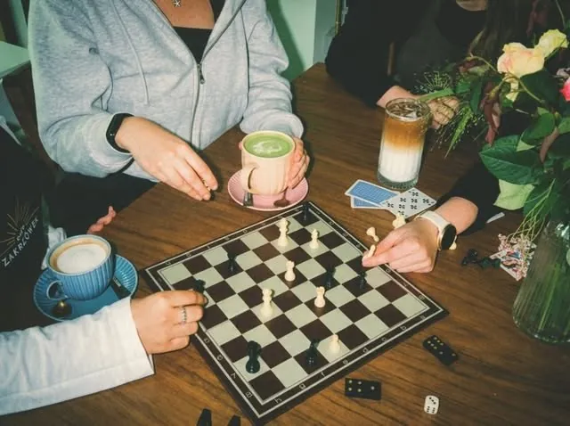
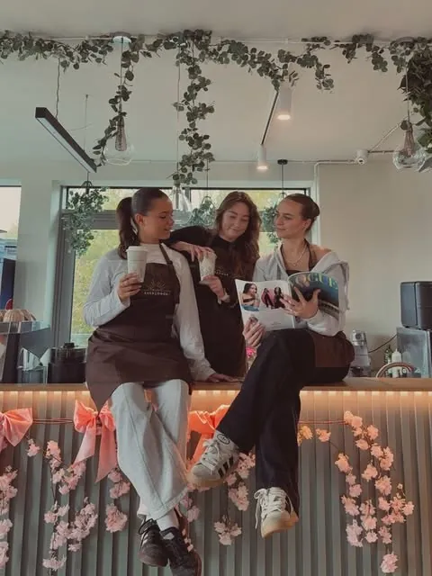
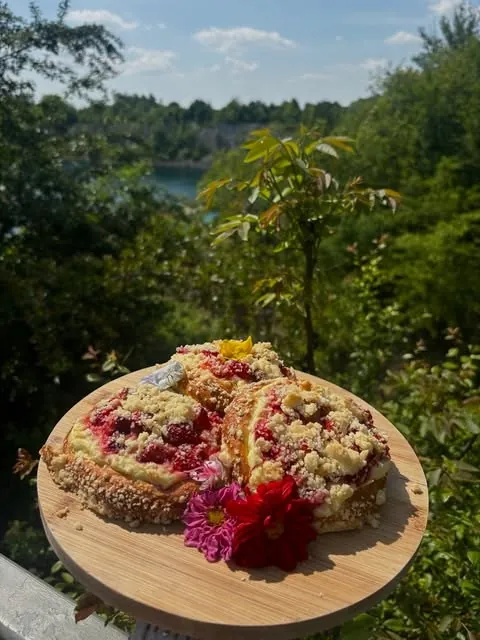
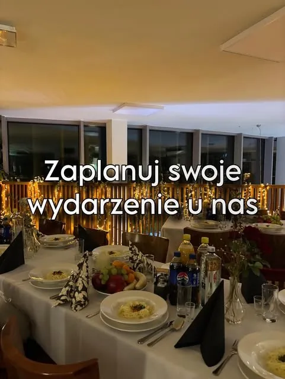
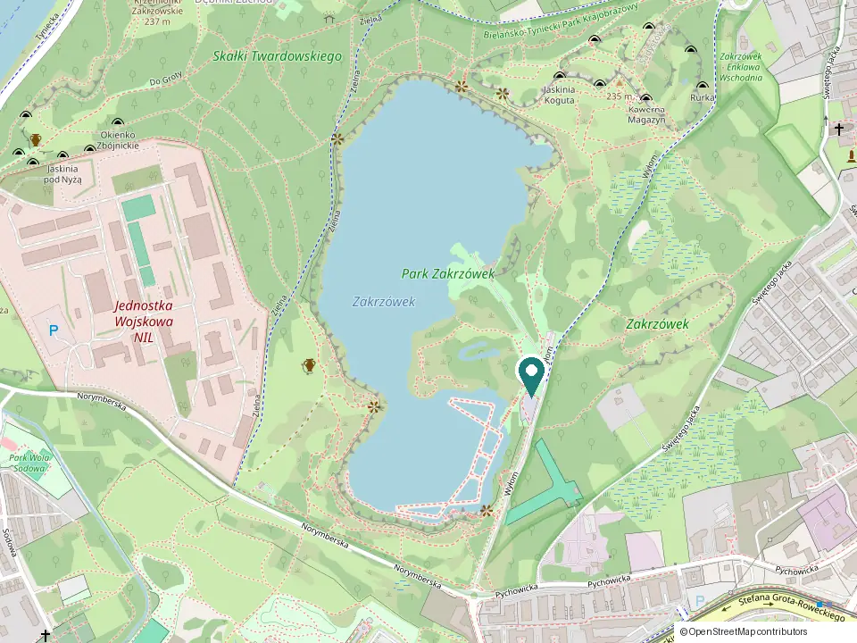

na miejscu
Gry planszowe i szachy
Przestrzeń do rozrywki i odpoczynku – zostań na partię.
Codziennie 9:00–19:00
Kiedy liście wokół zalewu zmieniają kolor, spacer najlepiej kończyć u nas: ciepła kawa, gazetka, partia szachów i coś słodkiego z witryny.
ul. Wyłom 22, Kraków-Dębniki · tuż nad zalewem Zakrzówek

Jesteś na spacerze nad Zakrzówkiem?
Jesteśmy przy ul. Wyłom 22, tuż przy ścieżkach wokół zalewu. Ciepła kawa na wynos w drogę albo stolik w środku z widokiem.
Kawiarnia jest tuż nad Zakrzówkiem – bez nadkładania drogi.
W naszym kubku z logo, do tego drożdżówka albo croissant z witryny.
Usiądź przy stoliku i popatrz na turkusową wodę i zieleń wokół zalewu.
Sprawdzimy, jak daleko jesteś (lokalizacja nie jest nigdzie zapisywana).

Oferta jesienna
Dłuższe popołudnia przy stoliku – z kawą, czymś słodkim i grą planszową.
Przestrzeń do rozrywki i odpoczynku – zostań na partię.

klasykMaliny zawinięte w ciasto drożdżowe, przykryte kruszonką.
Kawa, gazetka i nasze świetne baristki gotowe do pracy.
Widok, który zatrzymuje
Nie tylko na chwilę
Zaplanuj swoje wydarzenie u nas
Duża, klimatyczna sala z pięknym widokiem w kawiarni przy ul. Wyłom 22. Organizujemy:
Organizujemy też spotkania z gośćmi – np. wieczory podróżnicze. Śledź nasz Instagram, żeby nie przegapić kolejnego.

Pytania
Przy ul. Wyłom 22 w Krakowie (Dębniki), tuż nad zalewem Zakrzówek. Przycisk „Prowadź do nas” wyznaczy trasę pieszą w Mapach Google.
Codziennie od 9:00 do 19:00.
Tak. Kawę podajemy na wynos w naszych kubkach, a do tego możesz wziąć coś z witryny.
Codziennie w witrynie są croissanty wytrawne i kanapki, a do tego drożdżówki: malinianki, a sezonowo jagodzianki i poziomianki. Witryna zmienia się codziennie, a niektóre pozycje chętnie podgrzejemy.
Tak. Mamy dużą, klimatyczną salę z widokiem, w której organizujemy urodziny i imieniny, imprezy firmowe, spotkania biznesowe, konferencje i warsztaty, baby shower oraz ceremonie zaślubin. Termin ustalisz pod numerem 795 455 233 lub mailowo: cafe.zakrzowek@gmail.com.
Tak, na miejscu są szachy i gry planszowe, a do kawy gazety i magazyny.
Dojazd i godziny
